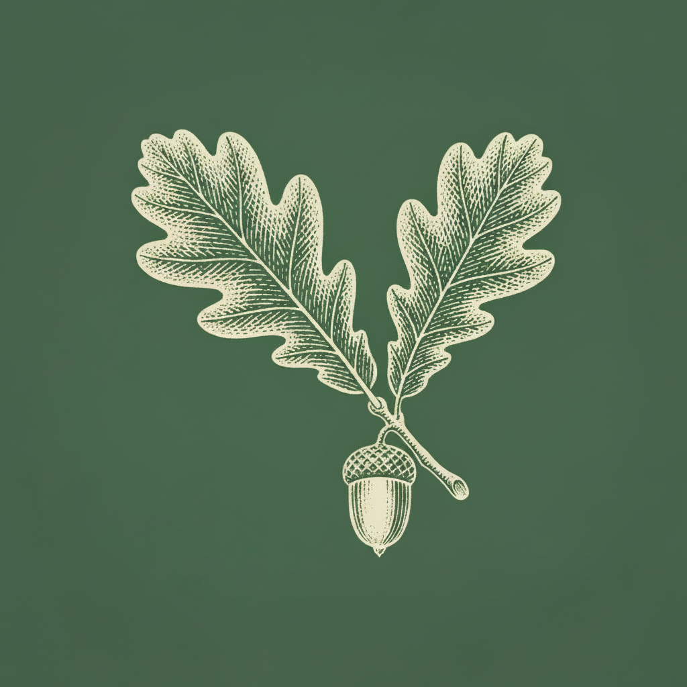
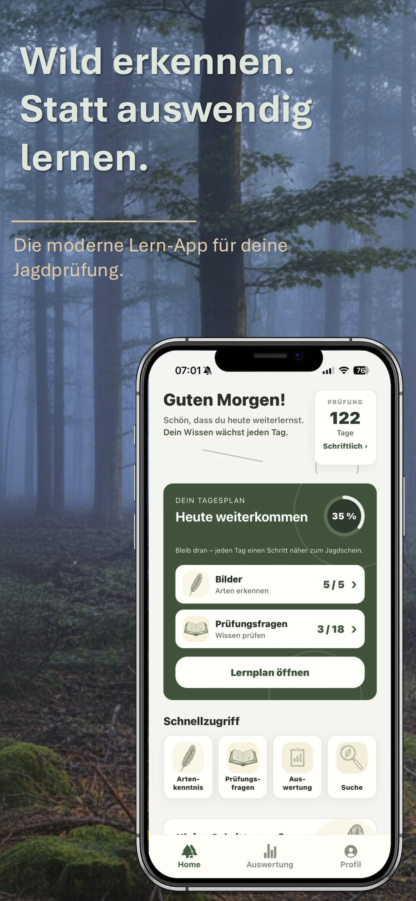
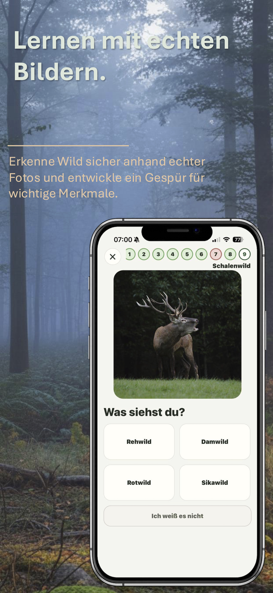
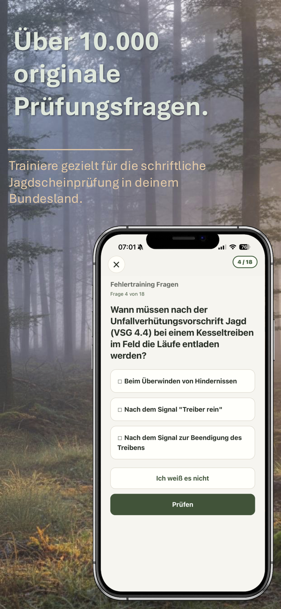
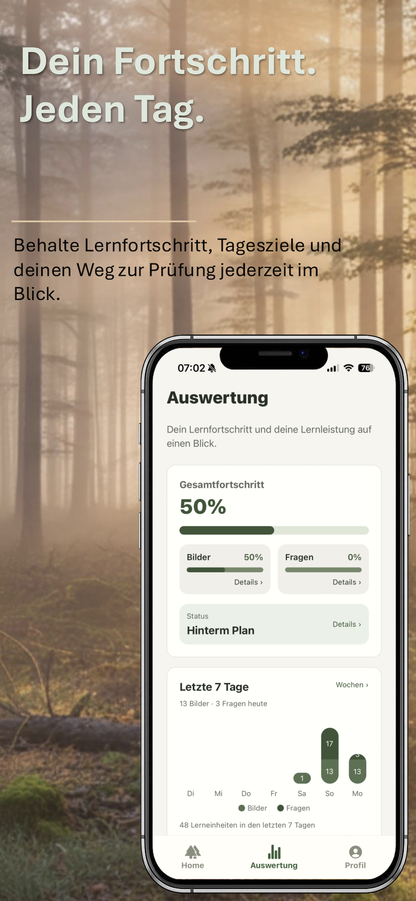
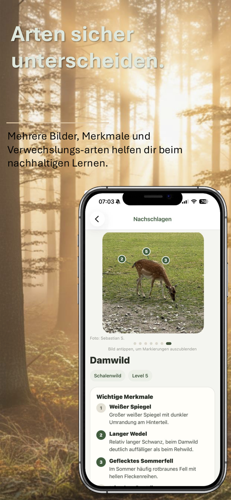
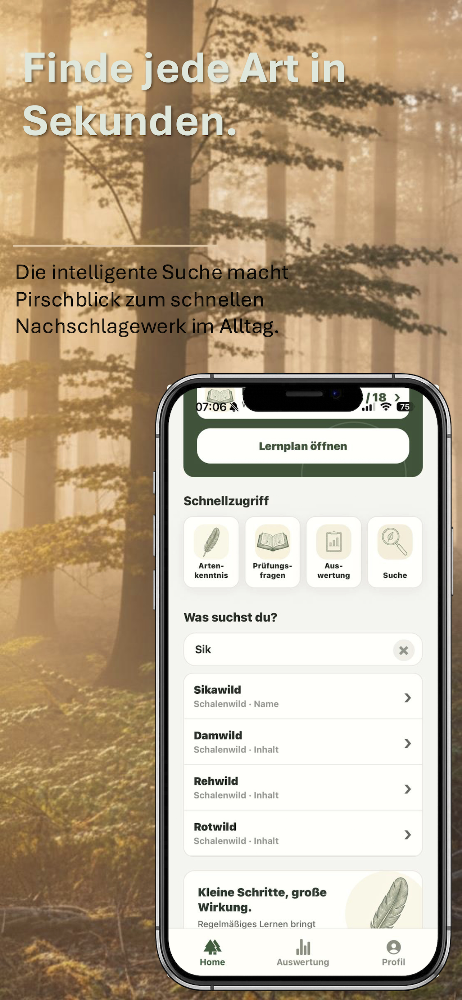

Echte Bilder
Trainiere Wildtiere, Pflanzen und weitere prüfungsrelevante Arten anhand realistischer Aufnahmen.

PirschblickJagdschein-Lern-App
Pirschblick verbindet Artenkenntnis anhand echter Bilder, originale Prüfungsfragen und einen persönlichen Lernplan für deine Jagdscheinprüfung.
App kennenlernenEinblicke in Pirschblick
Lerne Arten sicher zu erkennen, trainiere originale Prüfungsfragen und behalte deinen persönlichen Fortschritt im Blick.






Trainiere Wildtiere, Pflanzen und weitere prüfungsrelevante Arten anhand realistischer Aufnahmen.
Lerne mit originalen Prüfungsfragen aus mehreren Bundesländern und wiederhole Fehler automatisch.
Bleib mit Tagesziel, Prüfungs-Countdown und Fortschrittsübersicht bis zur Prüfung auf Kurs.
Jagdschein lernen mit Pirschblick
Pirschblick unterstützt dich bei der Vorbereitung auf die Jagdscheinprüfung. Du lernst Wildtiere, Pflanzen, Jagdhunde und weitere prüfungsrelevante Arten anhand echter Bilder. Zusätzlich trainierst du originale Jagdprüfungsfragen aus mehreren Bundesländern und wiederholst gezielt deine Fehler.